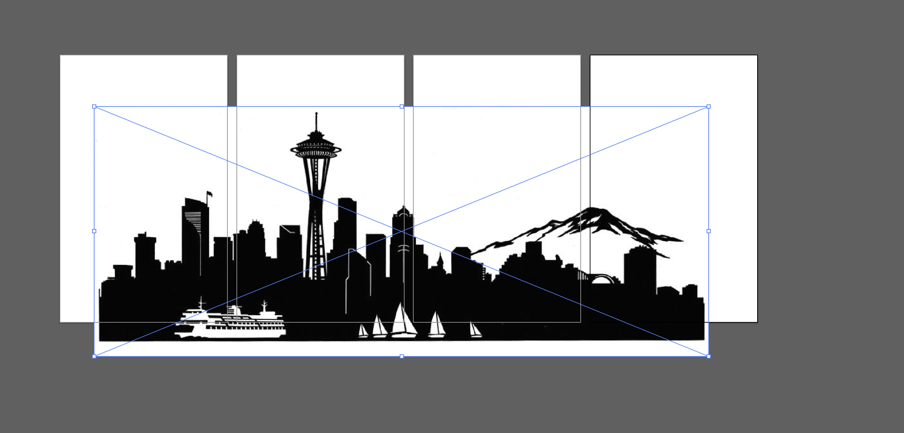

Assignment 8
Final Project: Seattle Skyline Lamp

Concept
My final project is a skyline lamp. The lamp serve as a gift to myself for when I move out of Seattle and will have something to remind me of home.
I got my inspiration from this lamp.
Process
I started with thinking about what are the different parts I need to create to achieve the look that I want. I built on the sketches I did for the project proposal. In total, the parts that I needed to create:
- 3D Print Base
- Laser Cut Lamp Panels (4)
- Laser Cut Skyline
With the parts in mind, I decided to make my lamp 5x5x8 because I wanted to make it portable but also big enough to see the skyline nicely. I assembled a bill of materials:
Bill of Materials
- Filament (might be free, @ Mill) - $27
- Acrylic (4x5 panels (4), @ Mill) - ~ $15
- Light lamp (Amazon) - $15
- Calipers – Free
I made sure to purchase and acquire materials first to make sure that things arrive at the right time.
The first step was to CAD model the base in Rhino since everything else will be built on top of it. I wanted to use interlocking joints to fit the panels into the base because I thought that would give it stability and hold the light. The joints were one inch long and 1/8 in thickness since my acrylic boards were 1/8 in thickness.
I modeled the base 5x5x0.4 and measured the diameter of the light to create a holder for it in my base. I made the holder to be a little but bigger than its actual diameter (2.7), so I made it 2.8. I wanted space to move the light in and out in case I need to change batteries. I also plan to use some velcro to make the light more firm inside the lamp but be able to remove as well.
I started the 3D printing first because it takes the longest to complete (4 hours). Unsurprisingly, I had the most problems with 3D printing. Whenever I uploaded my file into the 3D printer, it would tell me that the printing is complete before it even started. After many tries to troubleshoot (reslicing, changing computers, remaking the model), I ended up switching from Simplify3D to Dremmel, and it worked!
The next step was making the skyline that would eventually be the aesthetic of the lamp.
I searched up an image of Seatte skyline and choose the clearest and detailed outline of Seattle. To be able to laser cut, I had to convert the image into stroke lines only. Using Image Trace on Illustrator, I was able to create a laser-cutting outline really fast.
Once I have the skyline done, I created four artboards the size of my panels and placed it on top to measure and scale for what I wanted. I wanted the skyline to take only about half of the lamp so I scaled the image and made sure it was big enough and also long enough to cover the four panels. This also helped me figure out where to cut so that it splits into four different sections instead of one long skyline.
Laser cutting the skyline was surprisingly easy and satisfying! I used black construction paper and did a test cut of one of the panels to troubleshoot any problems that may arise and was pleasantly pleased with the outcome (unlike 3D printing or milling). One thing that I should have done was cut more than one copy of the skyline because later on, I accidentally crinkle it while I was gluing it on so having multiple copies would have been helpful.
The next step was to laser cut the panels. I bought the acrylic at Tap Plastics for $1 a piece of 1/8" acrylic. It was my first time using acrylic so it was quite exciting. I had to do a bunch of test cuts to find the right tolerance for the press fit into the base. I ended up just using the exact measurement of one inch for the cut because the others were either too tight or too big but now I am sitting here reflecting, I think the reason why there was such a difference between 0.1 is due to the fact I was on working with inches. I think if I used milimeters, I would have a better time getting a tighter fit.
For assembling in the panels, I was thinking of using the milling joints that we learned for CNC milling but then I remember how hard it was to mill and also my acrylic would not fit into the milling machine. Instead, I remember during one of the students presentations, one of the projects had a one cut joint so I tried to do something similar. Since the panels will be snug fit into the base, I only need to make sure that the pieces hold up together. This actually worked really well because I didn't have to stress about press fitting many cuts together but just need to made one piece and flip the press cut ends then cut two of each.
Laser cutting acrylic smelled really bad...

After all the pieces were cut and printed, I tried assembling it. It took a little bit of pushing and pulling to get all the pieces in and it fit well together. One thing that happened was that some of the press cuts were a little too loose and others weren't but since the pieces were holding each other up, it didn't become too much of an issue.
I needed to make sure that the panels were fitting correctly before I peel up the protective sheet (these were super helpful in helping capture the ash burn from laser cutting) to glue in the skyline. I also had to test how the skyline would look with the light on. The acrylic had a shiny side and a duller side so I needed to see if there is difference in reflection. I find that having the shiny side inside and dull side facing out produced the sharpest light so I glued the skyline onto the dull side.